| Alfred Evert | 15.12.2013 |
08.22. Das Tanzen der Satelliten
Nachtrag zu ´08.17. Äther-Wirbel der Erde´ mit dem Nachweis zur Existenz des Äthers
Beweis für die Existenz des Äthers
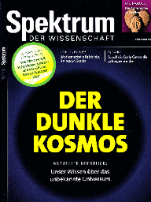
Bekannte Bahndaten
Rechts oben in diesem Bild sind die relevanten Daten der geostationären Satelliten (GS) eingetragen. Der Radius der Erde (E, blau) ist etwa 6378 km. In einer Höhe von 35786 km drehen die Satelliten ihre Runden, ein Mal täglich eine Umrundung, also synchron zur Rotation der Erde. Bei dieser Entfernung von exakt 42164 km vom Mittelpunkt der Erde bewegen sie sich mit exakt 3.073 km/s im Raum. Die Satelliten wollen aufgrund Trägheits-´Kraft´ (TK) immer geradlinig-tangential davon fliegen. Bei obigen Bedingungen ist die zentripetale Anziehungskraft (AK) der Erde exakt ausreichend, um die Satelliten kontinuierlich auf eine Kreisbahn herein zu ziehen.
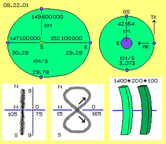
Den Betreibern geo-stationärer (bzw. geo-synchroner) Satelliten wird jeweils eine ´Box´ von etwa 1400/200/100 km zugewiesen (der hellgrüne Raum unten rechts im Bild). Um die Satelliten in diesem Bereich zu halten, muss gelegentlich nachgesteuert werden. Das Verschieben in West/Ost-Richtungen ist relativ einfach. Das Pendeln in Nord/Süd-Richtung ist praktisch nicht zu unterbinden. Nach zehn bis fünfzehn Jahren ist der Treibstoff aufgebraucht. Die ausgedienten Satelliten werden etwa 300 km höher auf einem ´Friedhof-Areal´ (´graveyard´, dunkelgrün unten rechts) geparkt - wo sie munter weiter tanzen.
Springender Punkt
In diesem Bild oben links rollt das Rad nun (mit gleichförmiger Drehung) auf dem Boden (grau) nach links. Der Bahnverlauf der beobachteten Massepunkte weist nun ganz andere Charakteristik auf. Der Massepunkt (C, rot) außen am Rad ´springt´ in einem weiten Bogen vorwärts (rote Kurve). Am Auflagepunkt ist er für einen kurzen Moment ortsfest ruhend, wird schräg aufwärts stark beschleunigt (siehe Abstand zwischen den roten Punkten), bewegt sich oben doppelt so schnell vorwärts wie die Nabe (A, grau), wird anschließend wieder herunter gedrückt und verzögert zum nächsten Auflagepunkt. Die Trägheit weist in wechselnde Richtungen. Aufgrund der wechselnden Geschwindigkeiten muss die Speiche nun ganz andere ´Zugkräfte´ leisten.
Auf der gleichen Speiche, aber nahe zur Achse, befindet sich der andere Massepunkt (B, blau), der sich auf einer wellenförmigen Bahn vorwärts bewegt. Über der Nabe kommt er relativ schnell voran, unterhalb der Nabe entsprechend langsamer. Parallel zur Nabe bewegt er sich nur in seiner obersten und untersten Position. Ansonsten weist seine Trägheit immer nach vorwärts, abwechselnd etwas aufwärts und abwärts gerichtet. Die Speiche wird also nicht mehr mit konstanter Zentrifugalkraft belastet, sondern mit variierenden Zugkräften in wechselnde Richtungen. Die auftretenden Kräfte am ortsfest drehenden Rad im Vergleich zum abrollenden Rad sind also ´unterschiedlich wie Tag und Nacht´.
Wie Tag und Nacht 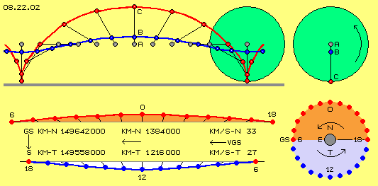
Die Erde bewegt sich in diesem Bild von rechts nach links, je Tag etwa um einen Grad vorwärts um die Sonne. Hier wird vereinfachend unterstellt, dass dieser kurze Bahnabschnitt linear verläuft. Bei der 18-Uhr-Position hinkt der Satellit hinter der Erde her, in der Nacht-Hälfte überholt er die Erde hinten herum, in der 6-Uhr-Position läuft er der Erde voraus. Dann überholt die Erde den Satelliten, der sich in der 12-Uhr-Position am nächsten zur Sonne befindet. Gegen Abend fällt der Satellit zurück auf die nächste Position bei 18-Uhr.
Links unten sind die beiden Bewegungen kombiniert, also die Rotation der Satelliten um die Erde und die (lineare) Vorwärts-Bewegung der Erde nach links. Oben ist der rote Bahnabschnitt in der Nacht-Hälfte (18-0-6-Uhr), unten die blaue Bahn in der Tag-Hälfte (6-12-18-Uhr) dargestellt. Beide Bahnabschnitte zusammen sind ähnlich zur Bahn des Massepunktes B bei obigem Rad-Beispiel. Die Zeichnung ist maßstabsgerecht hinsichtlich der Streckenabschnitte. Eingetragen sind die bekannten Daten.
Schnell und lang / langsam und kurz
Die mittlere Geschwindigkeit der Erde sind 2600000 km/Tag, d.h. 108300 km/h bzw. 30 km/s. In der Nacht überholt der Satellit die Erde (von der Sonne aus gesehen ´hinten herum´) und ist dort bis zu 3 km/s schneller. Seine Geschwindigkeit kann in der Nacht-Hälfte also bis zu 33 km/s betragen. Auf der Sonnen-Seite bewegt sich der Satellit entsprechend langsamer, also nur mehr bis zu 27 km/s. Die Differenz zur mittleren Geschwindigkeit des Satelliten im Raum kann also beachtliche 10 % betragen (real müsste vektoriell addiert werden). Im Prinzip fliegt also der Satellit eine lange Stecke hinten herum relativ schnell durch die Nacht und am Tag bummelt er eine kurze Strecke relativ langsam weiter vorwärts. In voriger Graphik ist die unterschiedliche Länge deutlich zu erkennen an der langen roten Phase und der kurzen blauen Phase.
Geschwindigkeiten und Richtungen 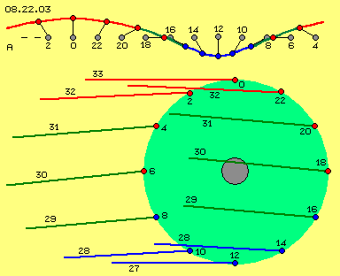
Unten im Bild ist die Richtung und Geschwindigkeit des Satelliten an den jeweiligen Positionen in größerem Maßstab gezeichnet. Man kann daraus z.B. erkennen, wie die Erde von 4-Uhr bis 8-Uhr den Satelliten herunter zieht und dabei von etwa 31 km/s auf 29 km/s verzögert. Bei 12-Uhr fliegt der Satellit kurzfristig parallel zur Erde, allerdings mit nur noch 27 km/s. Anschließend fliegt der Satellit hinter der Erde her. Deren Gravitationskraft zieht den Satelliten wieder nach oben und beschleunigt ihn bis auf 33 km/s bei Mitternacht. In diese Richtungen und mit diesen Geschwindigkeiten muss sich ein Satellit bewegen, wenn er während eines Tages synchron um die Erde kreisen soll, die ihrerseits mit 30 km/s um die Sonne vorwärts fliegt.
Trägheit und Gravitationskräfte
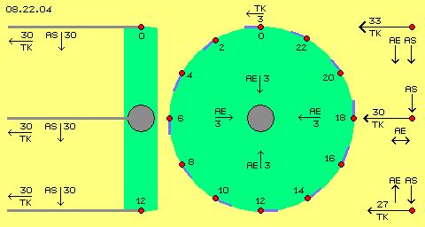
Rechts im Bild ist für drei Positionen das Zusammenwirken der beiden Anziehungskräfte dargestellt. Im äußersten Bahnpunkt (oben, 0-Uhr) ziehen die Kräfte der Erde (AE) und der Sonne (AS) gemeinsam den Satelliten in Richtung Sonne. In einer mittleren Position (bei 6-Uhr bzw. 18-Uhr) zieht nur die Sonne (AS) den Satelliten in ihre Richtung. Die Anziehungskraft der Erde (AE) wirkt radial, also beschleunigend oder verzögernd auf die Vorwärtsbewegung des Satelliten (siehe Doppelpfeil). In der unteren Position (12-Uhr) wirken beide Kräfte in konträre Richtungen: der Satellit wird einerseits zur Sonne gezogen (AS), während er zugleich nach oben gezogen wird durch die Erd-Anziehungskraft (AE). In allen anderen Positionen addieren sich beide Kräfte vektoriell.
Wirkung der Sonnen-Gravitation
Wenn umgekehrt der Satellit nahe zur Sonne steht (12-Uhr, links unten), ist seine Geschwindigkeit nur noch 27 km/s auf, was hinsichtlich der Kräfte ein Faktor von 0.8 bedeutet. Die Sonne wird also den ´zu langsamen´ Satelliten verstärkt zu sich her ziehen. Zur Erinnerung: die Geschwindigkeit der Erde ist im Perihel und im Apel nur um 1.6 % abweichend von der mittleren Geschwindigkeit. Die Sonne braucht ein Jahr, um das durch eine elliptische Bahn zu kompensieren. Die Sonne wird also kaum in der Lage sein, an jedem Tag die enorme Beschleunigung und Verzögerung der Satelliten zu kompensieren.
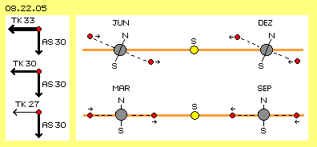
Rechts unten ist die Position im Frühjahr und Herbst (MAR und SEP) schematisch dargestellt. Wenn die Satelliten dort in der äquatorialen Ebene rotieren, werden sie nicht nach Nord bzw. Süd versetzt. Wenn sie sich von 0-Uhr bis 12-Uhr zur Sonne hin bewegen, würden sie beschleunigt, also nach Osten voraus eilen. Umgekehrt würden sie am Nachmittag und Abend verzögert, also zurück kehren auf ihre Mitternachts-Position. Das würde für alle Satelliten rundum gelten. Real findet diese West-Ost-Bewegung nur an ganz bestimmten Positionen statt. Die Gravitation der Sonne kann also keinesfalls den ´Tanz der Satelliten´ verursachen. Im Gegenteil: wenn obige Geschwindigkeits-Differenzen beachtet werden, würden die Satelliten in chaotischer Weise herum taumeln.
Wirkung der Erd-Gravitation
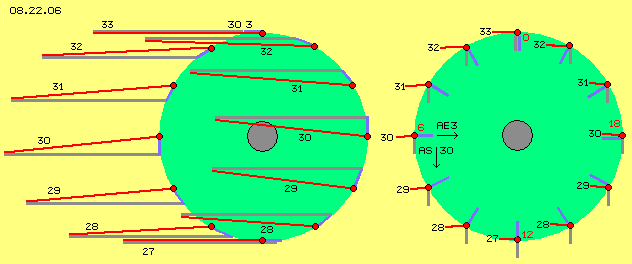
Die Anziehungskraft der Erde ist in Höhe der Satelliten so stark, dass sie einen 3 km/s schnellen Körper von seiner tangentialen Richtung umlenken kann in eine Kreisbahn. Eine tangentiale Richtung ist allerdings nur in zwei Positionen gegeben (bei 12- und 0-Uhr). In allen anderen Positionen fliegen die Satelliten in andere Richtungen. Die Anziehung wirkt dort also nur entsprechend zum vektoriellen Anteil. Die Geschwindigkeit der Satelliten ist nirgendwo 3 km/s, sondern etwa zehnfach höher (mit 27 bis 33 km/s). Ihre Trägheit ist somit 100-fach größer. Die Erd-Anziehungskraft ist also niemals in der Lage, die Satelliten in die gewünschte Bahn zu zwingen. Über die Ungeheuerlichkeit dieser Fehl-Kalkulation darf jeder selbst nachdenken.
Links in diesem Bild sind noch einmal die Satelliten eingezeichnet und die blauen Linien repräsentieren ihre Kreis-Bewegung um die Erde. Die grauen Linien repräsentieren die Vorwärtsbewegung um die Sonne. Diese Bewegung ist vereinfachend als Gerade gezeichnet. Die roten Linien repräsentieren die Resultierende aus beiden Bewegungen - genau so, wie sich geostationäre Satelliten im Raum bewegen müssen. Die Wellen-Bahn ergibt sich also nicht aus dem Zusammenwirken der Anziehungskräfte der Erde und der Sonne - sondern schlicht aus der Überlagerung zweier ´Strömungen´ auf Kreisbahnen.
Bei der bekannten Ermittlung des Radius für geostationäre Satelliten wird also nur nach dem Modell eines um eine ortsfeste Achse drehenden ´Rades´ gerechnet. Die völlig anders gelagerten Trägheitskräfte aus der zusätzlichen Vorwärtsbewegung werden schlichtweg ausgeklammert. Die Rechnung ist vollkommen falsch angelegt, was nicht stimmiger wird durch ein (zufällig) einigermaßen zutreffendes Rechenergebnis (siehe unten).
Glaube und Irrtum 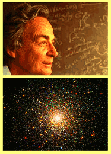
Richard Feynman war ein großer Physiker und er betonte stets, nur über Modelle reden zu können, die Realität aber möglicherweise ganz anders sein könne. In seiner berühmten Vorlesung zur Gravitation ´betrachtet er voller Ehrfurcht die Natur, die mit solcher Vollkommenheit und Allgemeingültigkeit einem derart raffiniert einfachen Gesetz wie dem der Gravitation folgt: F=G*m1*m2/r^2´. Etwas später kommt er beim Bild einer Kugel-Galaxis ins Schwärmen: ´Wer nicht erkennt, dass hier Gravitation am Werk ist, der hat keine Seele´. Hoffentlich hat seine Seele nicht Schaden genommen bei der (zu späten) Erkenntnis, dass es in Kugelsternhaufen in aller Regel keine Rotation gibt, also keine Fliehkräfte als Gegenpart zur Anziehung zwischen den Massen - und die Haufen unaufhaltsam in sich zusammen stürzen müssten. Genauso euphorisch beschreibt er seine Quantenmechanik und warum diese nicht mit ´normaler Logik´ zu verstehen ist. Welchem Irrtum er (und Kollegen) dabei aufsitzt - siehe unten.
Anziehung? Vergessen!
In meiner ´Äther-Physik´ habe ich viele Überlegungen dazu angestellt. In Teil ´08. Etwas in Bewegung´ wurde diese an etwa hundert physikalischen Phänomenen ´getestet´ (unter vielem anderen auch obige Satelliten-Problematik). Hier kann ich dazu nur einige relevante Resultate stichwortartig auflisten. Die jeweils ausführliche Begründung ist in meiner Website bzw. im Buch nachzulesen.
Ätherwirbel analog zu Wasserstrudel
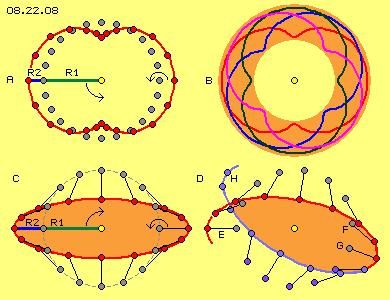
In diesem Bild unten links bei C ist ein System gezeichnet mit den gleichen Parametern wie bei A. Auf dem gestrichelten Kreis (mit Radius R1) sind hier 16 Positionen der grauen Punkte eingezeichnet. Es ergibt sich aber eine völlig andere Bahn (auf der roten Kurve sind 16 Positionen der roten Punkte eingezeichnet), weil hier R2 gegensinnig zu R1 dreht (siehe Kreispfeile). Umgekehrt zum vorigen System ist die geringste Geschwindigkeit an den Scheiteln gegeben (siehe kurze Abstände zwischen den roten Punkten ganz links und rechts). Von außen zur Mitte erfolgt eine Beschleunigung, zum anderen Scheitel hin eine Verzögerung.
In diesem Bild unten rechts bei D ist das gleiche System noch einmal gezeichnet. Die Relation der Drehgeschwindigkeiten ist aber nicht mehr 1 zu 2, sondern nur noch 1 zu 1.8. Bei E weist die ´Speiche´ vom grauen Punkt horizontal nach links (zum linken Scheitelpunkt). Auf der gegenüber liegenden Seite (bei F) ist die überlagerte Drehung noch nicht fertig. Erst bei G bildet der Radius wieder eine gestreckte Linie zum Zentrum. Der rechte Scheitelpunkt wird also zu spät erreicht. Anschließend sind die Punkte hell- und dunkelblau markiert und der nächste Scheitel wird erst bei H erreicht (anstelle von E). Bei dieser Relation dreht also der ganze ´Balken´ um das Zentrum.
Balken-Galaxis 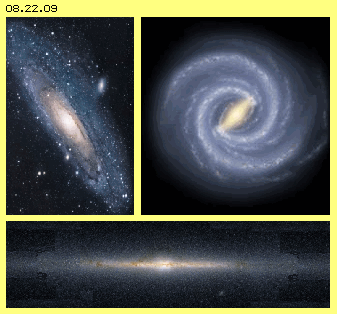
Die Bereiche vor und hinter dem drehenden Balken sind weitgehend ´leergefegt´. An den Scheitelpunkten des Balkens arbeitet die Kehrmaschine aber nicht sauber. Von der zentrumsnahen Position zum nächsten Scheitel hinaus wir die Geschwindigkeit immer langsamer. Aufgrund der gegenläufigen Drehungen ist die Geschwindigkeit direkt am Scheitel minimal. Die rotierenden ´Kehrbürsten´ verlieren dort viel Treibgut. Weil der Scheitel rechtsdrehend weiter wandert, hinterlässt er fortlaufend ein ´Band von Schmutz´. Diese Spiralarme driften relativ langsam weiter vorwärts und auswärts.
Dieses Bild dynamischer Bewegung kommt also zustande durch Strömungen, die man sich vereinfachend auch als Wasser-Wirbel vorstellen kann. Alle ´feste Materie´ driftet rein passiv in der jeweiligen Richtung, die sich aus der Überlagerung von nur zwei Kreis-Bewegungen ergibt. Die Massen werden zur Mitte hin gespült und im Balkenbereich ´abgelegt´, ohne das irgendeine Form von Anziehung wirksam sein müsste. Diese Ansammlung von Sternen im Zentrum übt auch keine Masse-Anziehung aus (sonst könnten die langsamen Spiralarme nicht weiter hinaus driften). Es bedarf keiner Dunklen Materie und es ist kein Schwarzes Loch erforderlich, um ein vermeintliches Manko an Zentripetalkraft auszugleichen.
Milchstrasse 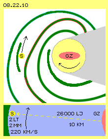
Die Distanz zum Galaktischen Zentrum sind unvorstellbare 26000 Lichtjahre (LJ), während das Licht die ganze Sonnen-Ekliptik in nur zwei Tagen (2 LT) durchläuft. In diesem Bild unten sind die Dimensionen auf vorstellbare Größenordnungen übertragen. Wir sehen in 10 km Entfernung das rechte Ufer (GZ) eines nach rechts gekrümmten Flusses. Entlang des linken Ufers (bzw. des Treibgut-Gürtels eines Spiralarmes, hinter dem der Fluss noch einmal so breit ist) rollt ein kleiner Wasserwirbel vorwärts - mit einem Durchmesser von gerade mal zwei Millimeter.
Die Sonne rast mit mindestens 220 km/s vorwärts im Raum. Gegen deren Trägheit soll sie nach gängiger Anschauung in eine Kreisbahn gezwungen werden durch Anziehungskräfte der Massen im Galaktischen Zentrum. Das mag glauben wer will. Die materiellen Massen (deren Anteil die Astronomen auf maximal 5 % errechnen) sind praktisch vernachlässigbar, sie können keine ´aktive Rolle´ spielen durch Ausübung vermeintlicher Anziehung. Ihre Trägheit ist völlig unbedeutend gegenüber der Trägheit des gigantischen ´Wasserwirbels´ der Milchstrasse. Der Staub und die Sterne inklusive ihrer Planeten treiben in den Strömungen nur ´passiv´ dahin.
Lichtäther
Wie entsteht Licht überhaupt? Bei zu heftigem Zusammenprallen von Atomen entsteht im Äther ein gewisser ´Stress´. Dieser wird entspannt durch eine Ausgleichs-Bewegung in Form einer einmalige Umdrehung, die zwischen den Atomen seitlich hinaus schießt. Wie eine Schraube (mit nur einem Gang) ´bohrt´ sich das Photon durch den Äther: vorn wird spiralig der Äther auf eine Kreisbahn gezwungen, der kurz danach wieder auf seinen originären Ort zurück fällt. Im Logo meiner Bücher (siehe Bild 08.22.11 oben links) ist das generelle Prinzip dieses Bewegungsmusters stilisiert.
Theoretisch kann es konstante Geschwindigkeit eines Körpers nur in einem ´Idealen Gas´ geben: der Druck an der Vorderseite breitet sich in alle Richtungen gleichförmig aus, liegt also mit gleicher Stärke auch an der Rückseite des Körpers an. Mit seinem durch die Vorwärts-Bewegung erzeugten Druck schiebt sich der Körper verlustfrei durch das umgebende Medium. Ein reales Gas besteht aus einzelnen Partikeln. Wie beim Schall ersichtlich, ist damit Streuung und Schwächung unvermeidlich. Es kann nur eine Konsequenz geben (so ungewöhnlich das erscheinen mag): Äther kann nicht aus Teilchen bestehen, sondern muss ein zusammen hängendes Ganzes sein.
Elektron 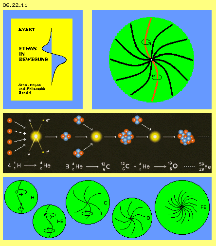
Diese ´Doppelkurbel´ (analog zur Kurbelwelle eines Zweizylinder-Motors, allerdings gerundet) schwingt um ihre Längsachse (siehe Kreispfeile). Momentan befindet sich oben der Äther etwas links und zum Ausgleich muss er unten momentan etwas rechts positioniert sein. Im lückenlosen Medium muss aller Äther seitlich davon entsprechend ausweichen (siehe die schwarzen Verbindungslinien). Rundum schwingt dann der Äther synchron zueinander (punktsymmetrisch zum Mittelpunkt): von außen nach innen an zunehmend längeren Radien, nach innen wieder weniger weit, im Zentrum bleibt der Äther praktisch an seinem Ort. Alle Bewegungen sind also aufeinander abgestimmt, es kann sich kein Teil dieser Bewegungseinheit selbständig bewegen. Bei der Ausbildung eines solchen Objektes muss alles zueinander stimmig in Schwingung kommen. Umgekehrt ist die Bewegung in dieser Äther-Plasma-Kugel kaum mehr zu stoppen. Darum sind Elektronen so extrem langlebig.
Atom
In der unteren Zeile sind die Merkmale dieser Elemente schematisch skizziert (als flaches Bild der räumlichen Objekte). Maßstabgerecht ist der Durchmesser der Elemente gezeichnet, wobei z.B. das O eine bessere Ordnung aufweist als das C und darum ein geringeres Volumen hat. Im Gegensatz zu dieser Skizze können zusätzliche Wirbel auf den vorhanden aufsitzen. Rund um das Zentrum sind dann Doppel- oder auch Mehrfach-Kurbeln radial angeordnet (entsprechend zur konventionellen Vorstellung differenzierter Elektronen-Bahn-Ebenen).
Das Atom besteht also nur aus ´reinem´ Äther. Das All besteht nur aus der einen Substanz. Es gibt daneben keine andere ´Materie´. Es gibt nur lokale Bereiche (im Gegensatz zum Freien Äther bezeichnet als ´Gebundener Äther´) mit intern spezifischer Ordnung. Nach außen besteht immer ein fließender Übergang zum ´ruhenden´ Freien Äther. Nach innen unterscheiden sich die Atome durch die Komplexität ihrer Bewegungsmuster. Es gibt darin aber keine ´Elementar-Teilchen´ und keine ´Sub-Elementar-Teilchen´. Es gibt immer nur ein in sich zusammen hängendes Schwingen. Besonders im engen Raum des Zentrums müssen alle Bewegungen exakt aufeinander abgestimmt sein. Nur darum erscheint der Atom-Kern hart und massiv. Was man z.B. als ´Quarks´ zu erkennen glaubt, sind Bahnabschnitte von Bewegungen, die natürlich pausenlos von einer Charakteristik in eine andere übergehen am beobachteten Ort. Wenn z.B. am CERN geordnete Bewegungsmuster von ´Teilchen´ aufeinander geschossen werden, resultiert nur Bewegungs-Schrott (der mangels innerer Ordnung vom umgebenden Äther sofort aufgerieben wird). Es ist mehr als seltsam, per Crashtest untersuchen zu wollen, ´was die Welt im Innersten zusammen hält´.
Einstein-Äther
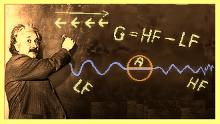
Bewegung im Raum, Masse und Trägheit
Im Gegensatz zum Photon muss ein Elektron nicht durch den Raum rasen, sondern kann an seinem Ort verbleiben. Durch einen Impuls kann es aber auch vorwärts gestoßen werden. Es bewegt sich dann aber nicht dieses ´Elektron-Äther-Volumen´ vorwärts im Raum, vielmehr wird nur seine Bewegungsstruktur im Äther vorwärts verlagert. Dem Äther vorn wird kurzfristig das Bewegungsmuster des Elektrons aufgeprägt, hinten aber setzt der übermächtige Freie Äther wieder den originären Zustand durch (und schiebt damit das Elektron im Äther vorwärts). Der zeitweilige Umbau auf das komplexere Muster tangiert peripheren Äther über das eigentliche Elektron-Volumen hinaus (und darum ist voriges ´Anstoßen der Masse´ erforderlich). Wenn das Elektron in Fahrt ist (widerstandslos in diesem ´idealen´ Medium), weist es Trägheit auf. Beim Aufprall auf anderen ´Gebunden Äther´ (lokale Bewegungs-Einheiten wie Elektronen oder Atome) wird diese als kinetische Energie wirksam.
Im Gegensatz zum simplen Elektron weisen Atome eine sehr viel komplexere Wirbelstruktur auf. Es erfordert darum sehr viel stärkeren Anstoßens, um diese aus ´ruhendem´ Zustand in Fahrt zu bringen. Auf ihrem Wege muss vorn sehr viel mehr Äther-Volumen in die neue Bewegungsform gezwungen werden. Weil aber der reale Äther die Eigenschaften des fiktiven ´Ideal-Gases´ hat, werden auch diese ´Wirbel-Kugeln´ widerstandslos im Äther-Raum vorwärts wandern (was durch ihre entsprechend größere Trägheit bzw. stärkere kinetische Energie zum Ausdruck kommt).
Es gibt keinen ´Wasser-Stoff, Helium-Stoff, Kohlen-Stoff, Sauer-Stoff oder Eisen-Stoff´ und keine ´Elementar- und Sub-Elementar-Teilchen Substanz´. Es bedarf nur der einen stofflichen Äther-Substanz, in welcher lokale Einheiten mit jeweils spezifischem Bewegungsmuster enthalten sind (maximal diese 5 % allen Äthers umfassend). Das Äther-Volumen eines Atoms ist nicht ´gewichtiger´ als das gleich große Volumen seiner Äther-Umgebung. Alles besteht aus der gleichen Substanz. Es muss sich keine ´feste Materie´ durch den dichten Äther quälen, es fliegt auch keine ´Portion-Äther´ durch den Raum, es wird immer nur die Bewegungs-Struktur nach vorn weiter gereicht. Das ist analog zum Schall: auch dort fliegen keine Luft-Partikel vorwärts, vielmehr wandert nur dieses Muster von ´Kompression mit nachfolgender Dekompression´ vorwärts und dahinter sind alle Luftpartikel wieder an ihrem alten Ort.
Damit ist das obige Licht-Äther-Dilemma aufgelöst: auch die Erde ist kein ´fester Brocken´, sondern nur eine riesige Ansammlung komplexer Wirbel-Einheiten aus Äther im Äther. Die Erde fliegt durch das All, indem alle Bewegungsmuster an einen anderen Ort verlagert werden. In gleicher Weise fliegen wir Menschen mit diesem Raumschiff dahin. Warum pfeift uns dann kein Äther-Wind um die Ohren (den man lange Zeit als Nachweis eines Äthers zu erfassen versuchte).
Sonnensystem
Die Beschleunigung kann nicht unbegrenzt ansteigen, weil die Sonne an ihrem Äquator nur noch 2 km/s Drehgeschwindigkeit aufweist. Vom Merkur einwärts muss der Potentialwirbel in einen starren Wirbel übergehen. Dessen Merkmal ist eine konstante Winkelgeschwindigkeit, wobei die absolute Geschwindigkeit von außen nach innen geringer wird.
Das Wirbelsystem der Milchstrasse wurde oben verglichen mit einem riesigen Fluss von Wasser. Im lückenlosen Äther sind solch weiträumigen Strömungen nicht möglich, weder an der Außengrenze noch innerhalb der Strömung können benachbarte Ätherpunkte aneinander ´vorbeischrammen´ (wie es in einem Teilchen-Medium problemlos möglich ist). Wenn es keine Äther-Strömung geben kann, die Planeten dennoch um die Sonne driften, muss deren Vortrieb eine andere Ursache haben. Dieser entscheidende Aspekt der Bewegungen im Äther ist in diesem Bild in der zweiten Zeile dargestellt.
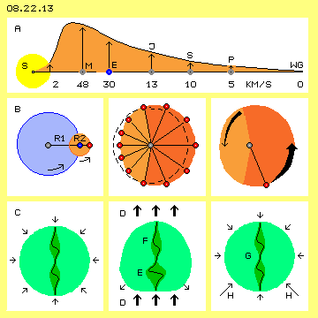
In der zweiten Zeile sind mittig zwölf Positionen des beobachteten roten Punktes eingezeichnet. Je Zeiteinheit durchläuft er unterschiedlich große Sektionen (siehe schwarze Linien). Wie oben mehrfach dargelegt, kommt es unabdingbar zu Beschleunigung und Verzögerung. Der Äther bewegt sich relativ schnell eine relativ lange Strecke (dunkelrot markiert), abwechseln dazu eine kurze Strecke relativ langsam (hellrot markiert). Anstelle der originären Kreisbahnen gibt es einen eingedellten Abschnitt und einen ausgeweiteten. Dieses Bewegungsmuster nenne ich ´Bahnen-mit-Schlag´ (im Bild rechts durch die unterschiedlich starken Pfeile hervor gehoben).
Weil sich aller benachbarte Äther synchron dazu verhalten muss, ergibt das einen Bereich des Bewegungsmusters ´Schwingen-mit-Schlag´. Im lückenlos zusammen hängenden Äther reicht dieser theoretisch in alle Richtungen unendlich weit. Auf einen lokalen Bereich begrenzt kann dieses Muster nur sein, wenn das Schlagen im Kreis herum synchron erfolgt. Eben das ist das Merkmal des ´Äther-Whirlpools´ um die Sonne (und ebenso funktioniert der Whirlpool der Galaxis und um andere Himmelskörper). An der Außengrenze dieser Wirbelsystem ist keine Überlagerung gegeben, nach innen wird der Radius R2 größer (die ´schlagende Komponente´ wird stärker), zum Zentrum hin geht R2 auf null zurück (so dass z.B. in der Sonne nur noch die gleichförmige Kreisdrehung R1 übrig bleibt).
Vortrieb durch Deformation
Das Atom wird von allen Seiten durch das ständige Rütteln des umgebenden Freien Äthers (siehe Pfeile) zusammen gedrückt. Nur etwa diese hundert chemischen Elemente halten diesem Druck stand, weil ihre interne Bewegungsstruktur in sich stabil und wohl geordnet ist. Alle Atomen haben einen fließenden Übergang zum Freien Äther. Inklusiv dieser ´Aura´ sind die Atome vermutlich viel größer als unterstellt wird. Die äußeren Bereiche der Atome sind in gewissem Umfang elastisch. Nur im Zentrum laufen so viele Wirbel auf engem Raum zusammen, dass er hart und fest erscheint.
Bei D repräsentieren die dicken schwarzen Pfeile, dass momentan der umgebende Äther eine schlagende Komponente aufweist (nach oben gerichtet). Das Atom wird unten eingedellt. Dort wird das spiralige Schwingen in Längsrichtung komprimiert (bei E, vergleichbar zu einer Spiralfeder) und entsprechend breiter. Weil die interne Bewegungs-Energie niemals zu stoppen ist, wird die ´weiche Grenze´ des Atoms unten-seitlich etwas ausgeweitet (siehe Pfeile). Oben am Atom bewirkt die schlagende Komponente, dass momentan der Äther dem Atom ´davon läuft´. Bei F wird die Wirbelspindel länger gestreckt und die Außenfläche des Atoms wird schlanker.
Im nächsten Moment geht das schnelle Schlagen über in die Verzögerungsphase, d.h. der umgebende Äther schwingt nun sehr viel langsamer zurück. Hier kann nun der Freie Äther das Atom wieder in seine ursprüngliche Form zurecht drücken, besonders die Ausweitungen im unteren Bereich (siehe Pfeile bei H). Intern gleichen sich auch die unterschiedlichen Spannungen der beiden ´Spiral-Federn´ aus, wodurch das Zentrum (G) etwas nach oben rückt.
Kurbeln und Spindeln
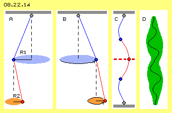
Kein Wind, keine Trägheit, keine Anziehung, andere Masse und Dichte
Im vorletzten Bild 08.22.13 ist die Bewegung aus der Überlagerung rechts am schnellsten und links am langsamsten. Das daraus resultierende, einseitige ´Schlagen´ ist verantwortlich dafür, dass im ganzen Sonnensystem ein ´Links-Drall´ vorherrschend ist. Das obige Atom wird darum auch nicht vollkommen symmetrisch beeinflusst: unten rechts wirkt das Schlagen stärker und oben links ist die Verzögerung am größten. Das Atom wird also unten rechts stärker eingedrückt und die Entspannung geht nach oben links leichter. Das Bewegungsmuster wird damit nicht nur nach vorn versetzt, sondern auch geringfügig nach links gedreht, d.h. im Drehsinn des Systems ausgerichtet.
Die Erde rast mit 30 km/s um die Sonne - aber sie weist keine tangential gerichtete Trägheit auf. Jedes einzelne Atom verhält sich wie eine ´Amöbe´, die durch Deformation und Regenerierung mitsamt ihrem Inhalt im Kreis um die Sonne verlagert wird. Wenn kein Bestreben nach außen vorhanden ist, gibt es keine Fliehkraft, die durch zentripetale Anziehung auszugleichen wäre. Es bedarf keiner Massen-Anziehungskraft. Das Fatale daran: alle auf der Vorstellung einer universalen Gravitations-Konstanten beruhenden Berechnungen von Dichte und Masse der Himmelskörper ist hinfällig. Die Sonne ist eine Ansammlung von Gasen, die durch keine Schwerkraft extrem komprimiert sein müssen. Die Sonne wird keinesfalls 98 % aller Masse im Sonnensystem aufweisen. Dieser ´Stecknadel´ steht die gesamte ´Äther-Masse´ der gesamten Ekliptik gegenüber. So wie der ganze Whirlpool, so besteht die Sonne und alle Planeten aus ganz normalem Äther, nirgendwo ist ´schwere Masse´ konzentriert.
Whirlpool der Erde
In durchschnittlich 384400 km Höhe driftet der Mond (M) mit nur noch 1 km/s um die Erde, je Monat etwa eine Umdrehung. Nach außen hin wird die absolute und die Winkel-Geschwindigkeit kleiner, wie bei jedem Potentialwirbel (WP). Daraus lässt sich schließen, dass die Grenze des Whirlpools (WG) beim Radius von rund einer Million Kilometer gegeben ist (etwa so weit wie bislang der Einfluss der Erd-Anziehung angenommen wird).
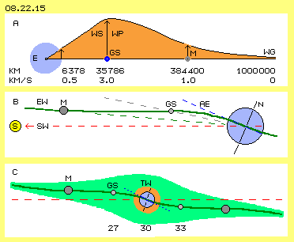
Der Erd-Whirlpool schwingt nicht in einer planen Ebene, er ist eher wie ein ´Schlapphut´ geformt. Ein Anzeichen dafür ist das seltsame ´Taumeln´ des Mondes (schwankend gegenüber der äquatorialen Ebene zwischen 18 und 28 Grad). Der Mond rotiert jeden Monat ein mal um seine eigene Achse (verursacht durch obigen ´Amöben-Effekt´) und er wird wiederum einen eigenen Whirlpool aufweisen (vermutlich die Ursache für die ´Spring-Verspätung´, wo die höchste Tide immer erst einige Tage nach Neu- und Vollmond auftritt). Der Erd-Whirlpool ist auch quer zur Richtung Erde-Sonne etwas geneigt bzw. verdreht (vermutlich um 15 Grad, woraus sich diese einstündige Verspätung der stabilen Positionen geostationärer Satelliten ergibt).
Die Nord-Süd-Abweichung dieser Satelliten ist geringer als die des Mondes. Offensichtlich schwenkt der Erd-Whirlpool erst ´auf den letzten Kilometern´ in die äquatoriale Ebene AE ein (siehe gekrümmte grüne Kurve EW). Unten in diesem Bild bei C ist der Erd-Whirlpool als grüne Fläche gezeichnet. So wie die meisten Galaxien wird auch dieser Äther-Wirbel linsen-förmig sein. Im Zentrum dreht die starre Erde gleichförmig. Bis zu den geostationären Satelliten muss auf der Sonnenseite ein Ausgleich zu 27 km/s statt finden, auf der Nachtseite zu 33 km/s. Einerseits führt das zur Neigung der Erdachse (wie analog auch die Sonnen-Achse eine Neigung aufweist und dort sogar der Äquator schneller dreht als die Regionen in höheren Breiten). Andererseits ergeben sich im Umfeld der Erde damit fortwährend Turbulenzen (TW, hellrot). Daraus entstehen lang gezogen Wirbelfäden (die man Magnetfeldlinien nennt). Oder es ergeben sich kugelförmige Einrollungen, welche die freien Elektronen der Ionosphäre bilden bzw. die negative Aufladung an der Erdoberfläche erzeugen.
Wie oben ausgeführt wurde, ergibt sich die Bahn der Satelliten (inklusiv ihrer Abweichungen von der exakt geostationären Position) aus der Überlagerung des Sonnen- und des Erd-Whirlpools. Die Bahnen von Satelliten und des Mondes sind mit herkömmlichen Formeln zu berechnen, mit ausreichender Genauigkeit. Es treten aber immer irgendwelche ´Störungen´ auf (bei Satelliten in der Erd-Umlaufbahn oder auch beim Flug zum Mond, zur Sonne oder anderen Planeten). Im vermeintlichen Vakuum können diese nicht ´willkürlich´ auftreten. Man müsste das vorhandene Datenmaterial exakt analysieren - und könnte die Geschwindigkeits-Verteilung (bzw. die Stärke der ´schlagenden Komponenten´) in den Whirlpools ermitteln - und exaktere Vorhersagen zu Bahnverläufen machen.
Gravitations-Konstante
Bekannt ist das Volumen des Mondes und seine Geschwindigkeit, so dass nun auch dessen Masse und Dichte zu berechnen ist. Analog dazu ist von der Erde auf die Dichte und Masse der Sonne zu schließen, analog auch für alle anderen Planeten. Wenn man diesen Formalismus auf galaktische Ebene ausweitet, wird allerdings ein Mehrfaches an Masse erforderlich. Erst mit der Dunkle Materie werden die Berechnungen stimmig - oder eben die generelle Fehlerhaftigkeit des gedanklichen Ansatzes offenbar.
Jeder Apfel fällt vom Baum. An jedem Ort und zu jeder Zeit wird aber eine andere ´Schwerkraft´ gemessen. Diese variable Kraft darf man nicht einfach als universale ´Gravitations-Konstante´ auf das Sonnensystem, die Galaxien und bis zu den Grenzen des Alls anwenden. Seriöse Messung ergaben z.B. dass eine Aberration der Schwerkraft jeden Tag eine Stunde vor Sonnenaufgang und eine Stunde nach Sonnenuntergang statt findet, im Promille-Bereich. Selbst die Wetterlage hat Einfluss auf die Messungen. Das sind deutliche Hinweise, dass die Erscheinung von Schwere nicht abhängig ist von Massen (die bleiben an einem Ort konstant), sondern bedingt ist durch Umstände in der Atmosphäre.
Unruhiger und ruhiger Äther
Der Freie Äther (weit entfernt von Himmelskörpern) ist gekennzeichnet durch die Überschneidung aller durch das All rasender Strahlung. Jeder Ätherpunkt wird fortwährend hin-und-her gerissen. Diese hastige, kleinräumige Bewegung ist vergleichbar mit einem heißen Gas, wo die Partikel mit hoher Geschwindigkeit von einer Kollision zur nächsten gestoßen werden. In der Magnetopause wird harte Strahlung heraus gefiltert und auch in der Ionosphäre bleiben viele ´Störungen´ von außen hängen. Dort wird der Äther also wesentlich ruhiger, vergleichbar zu einem Gas bei Normal-Temperatur.
In der Erdkruste wird Strahlung weitgehend absorbiert, der Äther zwischen den Atomen ist ruhiger (in obigem Vergleich analog zu einer Flüssigkeit). Jedes Atom hat eine Aura, in welcher ein fließender Übergang zwischen dem umgebenden Äther und dem atom-internen Bewegungsmuster gegeben ist. Je näher die Atome zueinander stehen, desto ähnlicher werden die inneren und äußeren Ätherbewegungen (ein ´sulziger´ Zustand entsteht). Bei kristalliner Anordnung der Atome bilden sich verbindende ´Brücken´ passender Bewegungsmuster (entsprechend starrer Eis-Struktur).
Noch tiefer in der Erde kann vermutet werden, dass die Unterscheidung in einzelne Atome fließend wird, der Äther also ´plasmatischen´ Charakter aufweist. Oben im Freie Äther werden die Atome komprimiert und konserviert durch dessen ständiges Rütteln rundum. Wenn dort unten der Äther zwischen den Atomen nicht mehr nervös zittert und drückt, können sich die internen Bewegungsmuster der Atome ausbreiten, d.h. alle Bewegungen ineinander übergehen zu einer in sich schwingenden ´Plasma-Substanz´. Tief in der Erde existiert somit durchaus eine ´Schmelze´ - aber null Anziehungskraft.
Da aller Äther in sich zusammenhängend ist, überträgt sich die ´Ruhe´ des Äthers aus der Erdkruste auch hinauf in die Atmosphäre. In den unteren Schichten sind viele Luftpartikel relativ eng beieinander, nach oben aber ist der Freie Äther zunehmend ´beunruhigt´ durch Strahlungen.
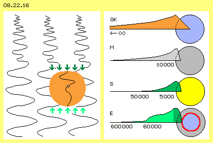
Wie bei obigem Äther mit ´schlagender Komponente´ werden die Atome deformiert und die internen ´Spiralfedern´ (siehe gekrümmte Verbindungslinie) unterschiedlich stark gespannt. Dadurch werden alle ´materiellen Partikel´ zur Erd-Oberfläche hin geschoben bzw. gedrückt. Bei obiger Fotomontage habe ich Einstein die Erklärung der Gravitation aufgrund Druck-Gradienten zwischen hoher und niedriger Frequenz in den Mund gelegt. Er hatte sehr wohl erkannt, dass der konventionelle Begriff von Bewegung auf den Äther nicht anwendbar sei. Dessen differenziertes Schwingen konnte er aber nicht mehr ausarbeiten.
Irdische Schwerkraft
In der zweiten Zeile ist der Mond (M) dargestellt, der aus erd-ähnlichem Material besteht, aber keine oder nur geringe Atmosphäre hat. Der Übergang vom ´heißen zum ruhigen´ Äther wird also auf geringer Distanz statt finden. Schwerkraft aufgrund eines Druck-Gradienten wird dann bestenfalls ab 10000 km Höhe auftreten (und endet in wenigen Kilometern Tiefe beim kristallinen Gestein).
In der dritten Zeile ist die Sonne (S) dargestellt, und vergleichbar ist die Situation bei Gasplaneten. Die Gase dieser Himmelskörper werden nicht durch vermeintliche Anziehungskräfte komprimiert. Sie sind vielmehr ´lockere Ansammlungen´ von Atomen mit einer breiten Atmosphären-Schicht. Darin ist die Dichte nur geringfügig ansteigend und entsprechend gering ist darin der Druckgradient. Schwerkraft könnte dort nur bis 50000 km oder auch nur auf 5000 km Höhe wirksam sein.
In der unteren Zeile ist die Erde (E) dargestellt, die umgeben ist von diverse Sphären. Die Magnetopause reicht nachts bis auf 600000 km hinaus, wird aber bei heftiger Einstrahlung auf 60000 km nieder gedrückt. In diesen Höhen wird harte Strahlung ausgefiltert und auch darunter in der Ionosphäre (ebenfalls in wechselnder Höhe). Unterhalb davon beginnt die ´Beruhigung´ des Freien Äthers, die auch noch in der Atmosphäre andauert (aber nur einige hundert Kilometer tiefer geht bis zur ´Übergangszone´, siehe grüne Kurve). Je nach ´Wetterlage´ variieren die Druck-Gradienten in unterschiedlicher Höhe (z.B. auch vor Sonnenaufgang und nach Sonnenuntergang, wenn die Sonnen-Strahlung quer zum normalen, vertikalen Druck-Gradienten einfällt). Die irdische Schwerkraft kann bestenfalls bei der Magnetopause beginnen, mit großer Wahrscheinlichkeit wirkt sie aber erst unterhalb der Höhe geostationären Satelliten.
Diese Satelliten driften rein passiv im Whirlpool der Erde. Nur die tiefer fliegenden Satelliten müssen schneller sein (als sie vorwärts geschoben werden durch die dortige ´schlagende Komponente´). Diese Satelliten (mit Relativ-Geschwindigkeit gegenüber dem Whirlpool) weisen Trägheit auf in tangentialer Richtung, welche kompensiert wird durch den zentripetalen Schub der Druckgradienten in dieser Höhe. Durch exakte Beobachtung der ´störender Einflüsse´ auf die Bahnen aller Satelliten (und Kometen) kann die (variable) Schwerkraft ermittelt werden.
Die wesentliche Konsequenz aus diesen Überlegungen ist: es gibt keine universelle Anziehungskraft zwischen Massen (wie sollte sie auch durch vermeintliches Vakuum hindurch wirken können). Es gibt keine lokal konzentrierte ´Masse´, weil überall der gleiche Äther existiert (und es ist seltsam, dass man erst jetzt mit dem vermeintlichen Nachweis eines ´Higgs-Teilchens´ zu erklären versucht, worauf ´Masse´ beruhen könnte). Die Atome weisen unterschiedlich komplexe Wirbelstrukturen auf (selbst bei gleichem Volumen). Deren ´Sperrigkeit´ gegenüber Beschleunigung/Verzögerung ergeben unterschiedliche Trägheit (wegen des Volumens und des Umfangs der zeitweiligen Umgestaltung der Bewegungen im Äther). Analog ergibt sich unterschiedliche ´Schwere´ der Atome aus der Komplexität ihrer internen Struktur (weil obige Druckgradienten an jedem Wirbelstrang lastet).
Es gibt also keine Anziehung und noch nicht einmal eine ´Gravitations-Konstante´, die für alle Himmelskörper einheitlich wäre. Die Stärke der Schwerkraft und der Bereich ihrer Wirksamkeit ist individuell für jeden Himmelskörper, in Abhängigkeit vom dessen innerem Aufbau und dessen Atmosphäre. Nur auf der Erd-Oberfläche fällt der Apfel vom Baum mit den bekannten Daten - und das zu jeder Zeit und an jedem Ort sogar geringfügig anders.
Gravitation im Gartenteich
In das Wasser fallen Regentropfen (vergleichbar zur einfallenden Strahlung) und drücken eine Delle in die Oberfläche (siehe Bild 08.22.17 oben). Von dort aus laufen Druckwellen in alle Richtungen. Das Wasser ist nicht kompressibel (so wie auch der Äther überall gleiche Dichte aufweist), dennoch laufen die minimalen Bewegungsmuster von Druckwellen hindurch (wie z.B. auch der Schall). Ein großer Teil davon läuft horizontal oder leicht abwärts gerichtet und bildet in den oberen Bereichen des Wassers ein ´Durcheinander´ von Bewegungen (vergleichbar zu den ´Sperrschichten´ der Magnetopause und Ionosphäre). Andere Teile sind vorwiegend abwärts gerichtet, verteilen sich aber in tieferen Bereichen des Wassers (siehe gerade Linien). Dort unten ist also das Wasser insgesamt ruhiger (vergleichbar zur Atmosphäre). Diese Differenz von ´Hektik´ wirkt auf die Schwebe-Partikel als ein vertikal abwärts gerichteter Druck (wie der Druck-Gradient unterschiedlicher Äther-Schichten). Die Druckwellen laufen durch das Wasser wie auch durch die Wasser-Anteile dieser Partikel hindurch. Die minimalen Wasserbewegungen ´verheddern´ sich am Struktur-Gerippe der Organismen und schieben sie nach unten (und analog dazu wirken die Druck-Gradienten auf die Äther-Wirbel-Struktur der Atome). Letztlich befinden sich alle Schwebe-Teilchen am Boden (wo die Druck-Impulse weiterhin als ´Gewicht´ in Erscheinung treten). 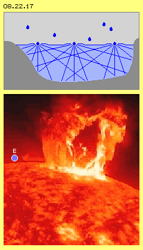
Gravitation an der Sonnen-Oberfläche
Es kann also diese vermeintliche Anziehungskraft nicht geben. Real ist um die Sonne das Gas nur locker verteilt und wird nach innen nur graduell dichter. In den dortigen Stürmen gibt es lokal viel größere Dichte-Differenzen. Die Gradienten aus ´heißem und kaltem´ Äther (und dort auch noch zwischen wechselnder Dichte der Gase innerhalb dieser Turbulenzen) verlaufen also völlig anders als auf der Erde. Es ist absolut unvorstellbar, daß die auftretenden Kräfte auf einer (universumweit) gemeinsamen ´Gravitations-Konstanten´ basieren könnten (Details siehe ´Etwas in Bewegung´).
Geistige Welten
Feynman würde mir diesen Spaß verzeihen, weil damit ein wichtiger Aspekt angesprochen ist: alles, was wir geistig/seelisch/mental bezeichnen, hat sehr reale Auswirkungen. Das kann nicht einfach ´irgendwie-nebulös-abstrakt´ vonstatten gehen, sondern muss genauso real manifestiert sein wie das, was wir physisch-materiell-existent nennen. Wie oben angedeutet wurde, hat dieser Äther unendliche Kapazität als ´Speicher´ für viele Bewegungsmuster, die wir als unterschiedlichste Erscheinungen wahrnehmen. Praktisch alle alten Weisheitslehren bringen es auf den Punkt: Alles ist aus Einem.
Rupert Sheldrake hat z.B. vielfach nachgewiesen, dass Information bzw. Wissen durch ´morphische Felder´ über weite Entfernungen hinweg verfügbar sind. Das ist nur möglich, wenn es im omnipräsenten Äther ganz real gespeichert und bei entsprechender Fokussierung auch abrufbar ist. Gedanken und Gefühle sind z.B. in der ´aufgeladenen Atmosphäre´ eines Fussball-Stadions so präsent, als wären sie ´mit Händen zu greifen´. Es gibt unzählige Beispiele als Beleg dafür, dass ´Geistiges´ reale Auswirkung auf ´Materielles´ hat (wie auch umgekehrt). ´Alles ist mit Allem verbunden´ ist nicht nur ein esoterischer oder spiritueller Glaubenssatz, sondern reale Wirklichkeit: alles ist mit wirklich allem unmittelbar verbunden, indem alles im einzigen, gemeinsamen Medium des Äthers vonstatten geht.
Diese Äther-Weltsicht geht also weit über das Phänomen tanzender Satelliten hinaus. Neben den physikalischen Aspekten hat sie eine philosophische Dimension und - wenn man länger darüber nachdenkt - auch ethische Konsequenz. Mancher Leser mag bei solchen Aussagen das Gemüt in Wallung kommen (was man an seiner Aura sehen könnte). Mancher Verstand wird sich instinktiv weigern, bekanntes Wissen auch nur anzuzweifeln (weil er eigentlich nur für rasche erfahrungs-basierte Entscheidungen in der materiellen Welt verantwortlich ist). Möglichweise könnte aber die Logik und Klarheit der ätherischen Weltsicht zum Nach-Denken anregen (oder dieses ´Etwas in Bewegung´ intensiver zu studieren in meiner Website bzw. im Buch).
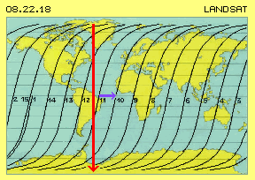
Bild 08.22.18 zeigt z.B. die Bahnen eines ´Landsat´-Satelliten: für eine Umlauf braucht er etwa hundert Minuten und umkreist die Erde jeden Tag fast fünfzehn Mal. Der Satellit fliegt auf diesem Bild von Nord nach Süd (roter Pfeil), wobei die Erde von West nach Ost unter ihm hindurch dreht (blauer Pfeil). Entlang einer S-förmigen Bahn ´scannt´ der Satellit die Erdoberfläche (in dieser ´rechteckigen Landkarte´ stark verzerrt). Weil er auf einem sonnen-synchronen Orbit geführt wird, werden die Bilder einer Region immer zur gleichen Tageszeit fotografiert. Es sind damit Vergleiche über die Jahreszeiten und Jahre hinweg möglich.
In Bild 08.22.19 ist grob skizziert, wie dieser Bewegungsablauf zustande kommt. Um die Sonne (S, gelb) dreht die Erde (blau) im Jahresablauf. Die Erde ist hier in vier Positionen eingezeichnet, jeweils mit Blick auf den Nordpol (N). Bei A bewegt sich der Satellit (SA, rot) von unten nach oben (roter Pfeil) über den Nordpol hinweg. Die Erde rotiert gegen den Uhrzeigersinn unter dem Satelliten hindurch (siehe Kreispfeil).
Die Neigung der Erdachse weist immer in gleiche Richtung, auch wenn sich die Erde von der Position A zur Position B bewegt hat. Theoretisch weist auch die Bahnebene des Satelliten immer in gleiche Richtung. Wenn die Bahn immer quer zur Sonne ausgerichtet sein soll, muss sie ebenfalls um 90 Grad nach links gedreht werden (siehe blauen und roten Pfeil bei B).
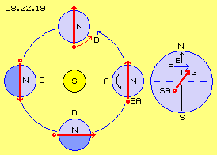
Rechts in diesem Bild ist die Erde in einer Seiten-Ansicht skizziert und dargestellt, wie dieses Mit-Drehen der Bahnebene zu bewerkstelligen ist. Der Satellit darf nicht genau von Süd nach Nord (schwarzer Pfeil E) auf die Umlaufbahn geschossen werden. Der Satellit müsste schon eine Vorwärts-Komponente (blauer Pfeil F) mitbekommen, also schräg (roter Pfeil G) in den Himmel geschossen werden. Tatsächlich bekommt jede Rakete dieses Drehmoment mit auf den Weg aufgrund der Erd-Rotation am jeweiligen Startplatz. Meist werden die Satelliten zunächst nur auf einen ´Park-Orbit´ gebracht und erst von dort aus in die gewünschte Bahn gesteuert.
Der Satellit weist einerseits Trägheit auf, andererseits wirkt die Gravitation konzentrisch zum Erdmittelpunkt. Der Satellit wird damit auf einer stabilen Kreisbahn (oder vorwiegend einer elliptischen Bahn) gehalten, egal mit welcher Neigung oder Höhe. Er wird sich immer auf einem Großkreis bewegen, dessen Bahnebene in gleichbleibende Raum-Richtung weist. Wenn hier die Bahnebene synchron zur Sonne mit-drehen soll, muss sie um etwa ein Grad je Tag gedreht werden. Bei fünfzehn Umläufen je Tag müsste die Drehung etwa 0.06 Grad je Umlauf sein. Das wird erreicht, wenn die Inklination 89.94 Grad aufweist (der Winkel zwischen der roten Linie G und dem blau gestrichelten Äquator ist hier also stark überzeichnet).
Vom Winde verweht
Die dargestellte Relation ist durchaus realistisch, wie auch oben rechts bei C nochmals skizziert ist: wenn der Satellit (SA, rot) 22 Umläufe absolviert, hat sich seine Rotationsachse (RA, blau) ein Mal um den Mittelpunkt des Systems gedreht. Theoretisch sind solche Bahnen im Raum stabil. Diese ´gewendelte Rotation´ ist nach der Schulphysik unmöglich (siehe z.B. die Reaktion eines Gyroskops, wenn man seine Drehachse im Raum schwenkt). Diese Kombination von Rotationen ist nach den Gesetzen der Himmelsmechanik unmöglich (es gibt keinen Planeten und Mond, die derart um ein Zentrum schlingern). Entsprechend vage sind die Erklärungsversuche, z.B. daß ´die Gravitationswirkung des Äquatorwulstes´ ein Drehmoment auf die Bahnebene ausüben könne. Es wurden auch Formeln gebildet, z.B. wp=(3a^2/2r^2)*w*cos(i)*J2), wobei J2 als ´Koeffizient des Erdentwicklungspotentials´ mit -1.083*10^-3 enthalten ist (bitte im Internet nachvollziehen, sofern möglich). Solche Formeln mögen sogar brauchbare Werte liefern, aber sie bilden wohl kaum die realen Gegebenheiten nach. Ich setze dagegen die simple Formel W=360*0.7/2N als ein direktes Abbild der realen Ursache und sie wird jedem leicht verständlich sein.
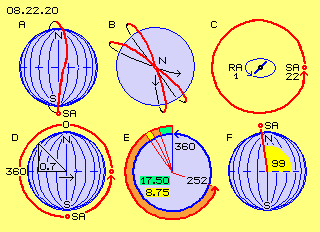
In diesem Bild 08.22.20 ist unten links bei D die Erde (blau) in einer Seitenansicht skizziert. Ein Satellit (SA, rot) bewegt sich von unterhalb des Südpols aufwärts zum Äquator (siehe roten Pfeil), über den Nordpol und wieder abwärts zurück zum Südpol. Die halbe Zeit hält er sich in Breiten > 45 Grad auf und erfährt in den relativ windstillen Polar-Bereichen wenig Schub. Die andere Zeithälfte bewegt er sich zwischen 45-Grad-Nord und -Süd, wo er den starken Winden ausgesetzt ist. Im einfachen Durchschnitt erfährt er einen seitlichen Schub von etwa 0.7 des maximalen Ätherwindes.
In diesem Bild bei E ist das in einem schematischen Schnitt durch die äquatoriale Ebene dargestellt. Die Erde dreht sich je Tag um 360 Grad (siehe blauen Pfeil). Ein Satellit wird nur mit 0.7 dieser Kraft vorwärts geschoben, je Tag also nur um 360*0.7 = 252 Grad (siehe roten Pfeil). Ein typischer Beobachtungs-Satellit hat eine Umlaufzeit von etwa 100 Minuten, absolviert also 14.4 Umläufe je Tag. Je Umlauf wird er um 252/14.4 = 17.50 Grad (hellgrün) nach Osten geblasen. Der Satellit ist diesem Schub von Süd nach Nord ausgesetzt und noch einmal von Nord nach Süd. Je Bahnabschnitt wird er also um jeweils um 8.75 Grad (gelb) versetzt. Dieser Sachverhalt ist formelhaft als obiges 360*0.7/2N zum Ausdruck gebracht (N = Umläufe/Tag).
Laut Internet fliegen die meisten Erdbeobachtungs-Satelliten auf Höhen zwischen 650 bis 900 km, etwa 14 bis 15 Umläufe je Tag, jeder Umlauf dauert etwa 100 Minuten, die Bahnebene weist eine Inklination von 98 bis 99 Grad auf. Genau das ergibt sich aus obiger simplen Berechnung (siehe gelb markierten Winkel bei F). Es ist also kein vermeintliches Drehmoment aufgrund erhöhter Gravitation im Äquatorbereich wirksam. Diese Satelliten werden schlicht und einfach durch den ´Ätherwind´ des Erd-Whirlpools nach Ost verfrachtet. Wenn die Bahnebene synchron zur Sonne ausgerichtet sein soll, muss gegen diese Abdrift gesteuert werden. Diese Satelliten müssen also etwas gegen den Wind gerichtet in ihre Umlaufbahn geschossen werden (und somit gegen den Drehsinn der Erde).
Gegen den Wind
Wenn ein Satellit in etwa 650 km Höhe und einer Umlaufdauer von 100 Minuten fliegt, muss er etwa 7.0 km/s schnell sein. Erst mit dieser Geschwindigkeit von beachtlichen 25.200 km/h (7.0*3600) ist er schnell genug, dass ihn der Druck irdischer Gravitation (hier nur angedeutet durch einen blauen Pfeil GD) fortwährend in eine Kreisbahn zwingt. Der erforderliche Anschub ist abhängig von der Flug-Richtung: wenn er in der äquatorialen Ebene mit der Erddrehung rotieren soll, reicht eine Startgeschwindigkeit von 6.5 km/s (weil der Wind mit 0.5 km/s beiträgt). Wenn er gegen die Erddrehung rotieren soll, muss er auf 7.5 km/s beschleunigt werden (weil der Ätherwind mit 0.5 km/s dagegen ansteht). Wenn er auf einem Polar-Orbit rotieren soll, muss er mit genau diesen 7.0 km/s in S-N-Richtung geschossen werden (wo er danach auf ´gewendelter´ Bahn weiter fliegt, wie in obigem Bild 08.22.20 bei B und C dargestellt ist). Wenn er in einem sonnen-synchronen Orbit mit einer Inklination von z.B. 99 Grad fliegen soll, muss er anteilig schneller gestartet werden (z.B. mit etwa 7.05 km/s).
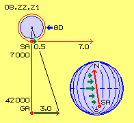
Rechts unten in diesem Bild ist die Erde in einer Seitenansicht dargestellt. Ein Satellit (SA) fliegt mit einer Inklination von etwa 99 Grad von Süd nach Nord (roter Pfeil). Von unten zum Äquator bläst zunehmend stärkerer West-Wind, nach oben wird der Wind wieder schwächer (siehe unterschiedliche grüne Pfeile). Der Satellit wird entsprechend abgelenkt auf eine S-förmige Bahn, fliegt aber insgesamt auf einer Bahnebene, die ortsfest im Raum steht bzw. konstant ausgerichtet ist zur Sonne (wenn sie je Tag ein Grad mitdreht, wie oben dargestellt wurde).
Diese Reise ist vergleichbar zur Route eines Fliegers bei Seitenwind oder eines Schiffes, das ein Gewässer mit Quer-Strömung zu kreuzen hat. Es bedarf eines ständigen Antriebs gegen den Widerstand der seitlichen Strömung, sonst verliert das Fahrzeug an Geschwindigkeit. Dort oben in der ´ätherischen Welt´ muss der Satellit nur ein Mal diesen Anschub erfahren und fliegt dann antreibslos immerzu weiter (Landsat-5 soll den Rekord mit 29 Jahren halten). Für die geltende Lehre ist das kein Problem: im Vakuum gibt es keinen Widerstand (dafür stimmen die Rechnungen nur, wenn man das Vakuum mit 95 % Dunkler Materie und Dunkler Energie auffüllt). Im Nichts kann sich nichts bewegen und ein Etwas (egal welcher Art Teilchen) würde sich augenblicklich in das umgebende Nichts auflösen.
Es muss also plausible zu klären sein, warum trotz Störungen die Konstanz der Geschwindigkeit gewährleistet ist. Das Problem ist ähnlich zum Bierglas-Phänomen (das nach geltender Lehre ebenfalls nicht zu begründen ist): ein Lichtstrahl von 300000 km/s wird verzögert, wenn er durch das Glas geht, wird reduziert auf 2/3 im Bier, wird wieder schneller im Glas und fliegt auf der anderen Seite mit unverminderter Lichtgeschwindigkeit davon (siehe Kapitel 04.03. meiner Äther-Physik).
Energie, Felder, Kräfte
Im Gegensatz zur abstrakten Vorstellung einer universalen Gravitation in Form von Masse-Anziehung wurde oben bei Bild 08.22.16 dargestellt, dass ein Druckgradient aus unterschiedlicher Charakteristik der Ätherbewegungen resultiert. Links im Bild bei A ist die schematische Darstellung wiederholt, Details siehe oben bzw. in Kapitel ´08.16. Wesen der Gravitation´ der Website bzw. im Buch.
Mittig im Bild bei B ist die schematische Darstellung der ´schlagenden Komponente´ der Whirlpools wiederholt (Details siehe oben bei Bild 08.22.13 bzw. im Kapitel ´08.17. Äther-Wirbel der Erde´ der Website bzw. im Buch). Schon bei der Überlagerung von zwei simplen Kreisbewegungen gibt es unvermeidbar eine Phase beschleunigter Bewegung im Wechsel mit einer Phase verzögerter Bewegung. Die schlagende Komponente deformiert die Atome und bei deren Regenerierung wird ihr Mittelpunkt etwas versetzt im Raum. Es gibt also keine weiträumige Strömung eines ´Ätherwindes´ (wie oben vereinfachend bezeichnet). Andererseits müssen sich benachbarte Ätherpunkte synchron zueinander verhalten, so dass dieses Bewegungsmuster auch ´galaktische´ Ausmaße um ein Zentrum umfassen kann.
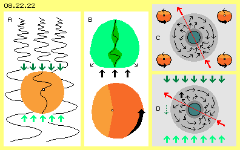
Das Atom bewirkt vorn einen (Verformungs-) Druck, der sich in die Umgebung ausbreitet. Im lückenlosen Äther gibt es aber keinen freien Raum. Der nach seitlich-vorn weggedrückte Äther kann nirgends wohin ausweichen - nur hinter dem Atom kann er wieder auf seinen alten Platz zurück fallen. Um das Atom und seine Aura herum gibt es also zusätzliche Bewegung. Dessen prinzipielles Muster ist durch gekrümmte Pfeile in dem hell-grauen Bereich dargestellt (wobei real die Bewegungen nicht nur von vorn nach hinten verlaufen, sondern gewendelt sind, z.B. analog zum Photon). Im Vergleich zum ruhenden Atom ist bei einem in Bewegung befindlichen Atom sehr viel mehr Äther-Volumen involviert, in diesem Sinne hat es mehr Masse. Das Atom führt eine ´Trägheits-Aura´ mit sich und je schneller das Atom fliegt, desto umfangreicher ist das Bewegungs-Volumen. Bei der Verzögerung des Atoms inklusiv seiner umgebenden Bewegungsstruktur wird kinetische Energie als mechanische Kraft wirksam.
Wer schon einmal einen Ball geschlagen hat (Fuß- oder Tennis- oder Golfball), hat kurzfristig Atome deformiert und ihnen einen Vorwärts-Impuls mitgegeben und damit ihre ´Äther-Volumen-Masse´ vergrößert. Schon während des Fluges bildet jeder Luftpartikel einen Widerstand, so dass die Geschwindigkeit reduziert wird. Oben im luftleeren Raum bleibt die Geschwindigkeit konstant. Das ist aber nur möglich, wenn der Verformungs-Druck vorn am Atom absolut verlustfrei als Vorschubs-Druck an der Hinterseite wirksam wird. Das ist theoretisch nur möglich in einem ´Idealen Gas´ - und eben dessen Eigenschaften sind real nur gegeben, wenn und weil der Äther tatsächlich ein lückenloses Ganzes ist. Das Theorem der Energie-Konstanz ist real nur gegeben in diesem teilchenlosen Medium.
Konstante Trägheit wechselnder Richtung
Dieses phasenweise Schlagen des Äther-Whirlpools übt also einen relativ sanften Schub aus (der dennoch die Planeten um die Sonne und den Mond um den Planeten im Kreis herum schiebt). Andere ´Felder´ bzw. Bewegungsmuster im Raum haben anderen Einfluss auf Atome. Unten rechts im Bild bei D ist z.B. die Wirkung der irdischen Gravitation auf die Trägheit-Hüllen der Atome dargestellt.
Dieses Atom ist Bestandteil der Rakete, die schräg-aufwärts geschossen wurde. Schon beim Aufstieg wird die Flugbahn zur Erde hin gekrümmt, d.h. der Vektor der Trägheit mehr horizontal ausgerichtet (siehe gestrichelten grünen Pfeil). Beim Erreichen der Umlaufbahn wird dieser Vektor fortlaufend in tangentiale Richtung geschwenkt (in unmerklich kleinen Schritten, welche je Umrundung aber ganze 360 Grad ergeben).
Im Gegensatz zu obigem Whirlpool beeinflusst das Bewegungsmuster der Gravitation also durchaus die Trägheit eines im Raum fliegenden Körpers bzw. jedes einzelne seiner Atome. Aus dem All steht fortwährend ´harte´ Strahlung an (kurzer Wellenlängen bzw. hoher Frequenz), was praktisch einem ´statischen´ Druck gleichkommt. Von unten sendet die Erde ´weiche´ Strahlung aufwärts (z.B. langwellige Wärmestrahlung) und der jeweilige Druck-Gradient schiebt alle Atome nach unten. Dabei wird eine Aufwärtsbewegung in der Trägheits-Hülle (hervorgehoben durch dicken schwarzen Pfeil) besonders stark behindert und damit die Trägheits-Hülle so gekippt, dass ihr Vektor immer in tangentiale Richtung weist. Die Angriffsfläche des Atoms plus Aura plus Trägheits-Hülle wird immer symmetrisch ausgerichtet zum radial wirkenden Druck-Gradienten. Anstelle des bislang ´inhaltslosen´ Begriffes der Trägheit sind diese Erscheinung und ihre Beeinflussung nun durch reale Ätherbewegungen zu begründen.
Verwirrung, Entwirrung, Perspektiven
Solang man nur die Ebene der Symptome untersucht, brauche man zweifelhafte Hilfskonstrukte zur Erklärung (hier z.B. die zusätzliche Anziehungskraft des Äquatorwulstes, dort die ganze Dunkle Materie). Wenn man den Äther-Hintergrund einbezieht, sind nur wenige Einschränkungen von Bewegungsmöglichkeiten zu beachten. Nach einigen generellen Regeln lassen sich viele bislang unverständliche Erscheinungen logisch stringent erklären.
Ein besseres Verständnis der grundlegenden Prozesse hinter der materiellen Welt wird auch die Konstruktion effektiverer Maschinen ermöglichen. Hier wäre z.B. sinnvoll, das Zusammenwirken zwischen den Trägheits-Hüllen und anderen Bewegungsmustern zu prüfen (z.B. der elektromagnetischen ´Felder´). Da man nun die Trägheit als ein konkretes Objekt von Äther-Bewegung verstehen kann, ist durchaus möglich, dass man dieses generieren, stimulieren oder manipulieren kann - und die eingeschlossenen Atome der ´künstlichen´ Trägheit nur passiv folgen. Diese Vorstellung mag seltsam erscheinen, aber verschiedene Forscher haben ähnliche Verfahren schon demonstriert (allerdings meist per try-and-error, was nun durch seriöse wissenschaftliche Forschung systematisch untersucht werden könnte).
Auch in vielen anderen Bereichen der Wissenschaften könnte die Forschung nun auf diesem neuen Hintergrund basieren und gewiss ganz neue Erkenntnisse und Resultate ergeben. Darüber könnte das bessere Verständnis der Beziehung zwischen Materie und Geist das soziale Zusammenleben positiv beeinflussen. Insofern besteht begründete Hoffnung, dass diese neue Weltsicht höchst interessante Perspektiven und Entwicklungen eröffnet.
Evert / 15.12.2013
In 2010 habe ich das Kapitel ´08.17. Äther-Wirbel der Erde´ veröffentlicht. Darin wurde beschrieben, dass die geostationären Satelliten nicht ortsfest über ihrem Platz am Äquator stehen, sondern jeden Tag einen seltsamen ´Tanz´ veranstalten, auf unterschiedlichen Bahnen, abhängig von der Position am Äquator. Diese Bewegungsmuster sind nicht zu erklären mit den bekannten Vorstellungen der Anziehungskräfte von Sonne und Erde. Sehr einfach sind die ´Phänomene´ zu erklären mit der Überlagerung der Äther-Whirlpools von Sonne und Erde - was ein eindeutiger Beweis für die Existenz des Äthers ist.
In Bild 08.22.01 sind oben links die Daten zur Bahn der Erde (E, blau) um die Sonne (S, gelb) eingezeichnet. Im Perihel befindet sich die Erde 147100000 km von der Sonne entfernt, im Apel ist der Abstand mit 152100000 km etwas länger. Die elliptische Bahn weicht also etwa +/- 1.6 % vom Mittelwert dieser etwa 150 Millionen Kilometer ab (siehe Daten oben in der grünen Fläche). Im Perihel bewegt sich die Erde mit 30.29 km/s relativ schnell durch den Raum, im Apel ist sie langsamer unterwegs mit 29.29 km/s. Gegenüber der durchschnittlichen Geschwindigkeit von knapp 30 km/s ist die Abweichung wiederum etwa 1.6 % (siehe Daten unten in der grünen Fläche).
Die Satelliten stehen aber nicht konstant direkt über dem Äquator. Sie wandern jeden Tag einmal nach Norden, zurück über den Äquator und nach Süden, dann wieder an ihren originären Platz. Diese Wanderung sind ´nur wenige hundert Kilometer´, weichen damit aber bis zu neun Grad vom Äquator ab. Wenn ein Satellit so positioniert ist, dass er bei Sonneaufgang und/oder bei Sonnenuntergang exakt über dem Äquator steht, bewegt er sich auf einer geraden Linie auf- und abwärts (siehe unten links im Bild). Wenn er so positioniert ist, dass er am Mittag und/oder an Mitternacht exakt über dem Äquator steht, bewegt er sich auf einer 8-förmigen Bahn (siehe mittig unten im Bild). Seltsamerweise ergeben sich obige Kurven nicht exakt bei den vorgenannten Positionen (6- und 18-Uhr bzw. 0- und 12-Uhr), sondern jeweils ´eine Stunde später´ (105-Grad West und 75-Grad-Ost bzw. 15-Grad-West und 165-Grad-Ost). Auf allen anderen Positionen über dem Äquator sind die Kurven ´verschmiert´.
In Bild 08.22.02 ist oben rechts ein Rad (grün) skizziert. Das Rad dreht sich um seine ortsfeste Achse (A). Eingezeichnet sind zwei Massepunkte (B und C), die sich auf Kreisbahnen im Raum bewegen. Aufgrund von Trägheit wollen sie tangential nach außen fliegen. Sie weisen gleiche Winkelgeschwindigkeit, aber unterschiedliche absolute Geschwindigkeiten und damit auch unterschiedliche ´Fliehkräfte´ auf. Die Speichen müssen fortwährend zentripetale ´Zugkraft´ ausüben (gemäß Formel a=v^2/r).
Die Erde ist im Mittel rund 150 Millionen Kilometer von der Sonne entfernt. Die 42000 km mehr/weniger Abstand der Satelliten zur Sonne ist vernachlässigbar (1/3571). Die Erde bewegt sich jeden Tag rund 2600000 km vorwärts, also rund 1.3 Millionen Kilometer binnen 12 Stunden. Von 18- bis 6-Uhr kommt ein Satellit zwei mal 42000 km weiter voran, d.h. während der Nacht-Hälfte etwa 1384000 km vorwärts. Am Tag fliegt er entsprechend weniger vorwärts, nur etwa 1216000 km. Die Abweichung vom Mittelwert ist mehr als +/- 3%.
Nach den bekannten Vorstellungen wird das erreicht durch das Zusammenwirken zweier Gravitationssysteme. In Bild 08.22.04 ist links skizziert, dass sich die Erde (grau) und ebenso die geostationären Satelliten (rot) mit etwa 30 km/s vorwärts bewegen. Die Länge der grauen Linien repräsentiert diese Geschwindigkeit bzw. die daraus resultierende Trägheits-´Kraft´ TK 30. Die Anziehungskraft (AS 30) der Sonne (weit unterhalb dieses Bildes) ist genau so stark, um die Erde- und Satelliten-Massen (in Relation zur Sonnenmasse vernachlässigbar gering) in eine Kreisbahn zu zwingen. Bei der mittleren Distanz zwischen Sonne und Erde von 1.5 Millionen Kilometer ist die geringe Differenz von +/- 42000 km ebenfalls unbedeutend.
In Bild 08.22.05 ist die Kraftwirkung der Sonne auf die Satelliten dargestellt, auf der linken Seite zunächst das Zusammenspiel von Trägheit und Gravitation. Die Anziehungskraft (AS 30) entspricht der mittleren Geschwindigkeit der Erde mit ihren rund 30 km/s und damit auch der Satelliten querab zur Erde (6-Uhr und 18-Uhr). An seinem äußeren Bahnpunkt (0-Uhr) weist der Satellit einen größeren Abstand zur Sonne auf, was aber zu vernachlässigen ist. Er bewegt sich dort mit 33 km/s ein Zehntel schneller, was durchaus bedeutsam ist. Die kinetische Energie und damit die Trägheit, die Fliehkraft und erforderliche Zentripetalkraft steigt im Quadrat zur Geschwindigkeit, aus 30:33 wird eine Relation von 900:1089 bzw. resultiert ein Faktor von 1.2. Die Sonne kann den Satelliten also nur schwerlich auf der erforderlichen Bahn halten.
In Bild 08.22.06 ist rechts das Zusammenwirken beider Gravitationskräfte schematisch dargestellt. Die blauen Linien sind radial zur Erde gerichtet und repräsentieren deren Anziehungskraft (AE 3). Die grauen Linien sind vertikal nach unten gerichtet und repräsentieren die Anziehungskraft (AS 30) der Sonne. Die roten Linien zeigen die Richtung an, in welche sich der Satellit in der jeweiligen Position bewegen muss.
Die Gravitation ist die schwächste ´Naturkraft´ - und ausgerechnet diese soll über Lichtjahre hinweg wirken können. Welche Ungereimtheiten dabei auftreten, wurde durch obige Beispiele aufgezeigt. Die ´starke Kernkraft´ gilt als mächtigste Kraft - und soll nur auf minimalem Radius den Atomkern zusammen halten. Die ´schwache Kernkraft´ soll das ganze Atom am Rotieren halten - auch wenn viele (sich generell abstoßende) Elektronen auf kreuzenden Bahnen herum wirbeln. Die Anziehung zwischen negativer/positiver Ladung gilt als Gesetz - obwohl noch nie ein Positron dingfest gemacht werden konnte. Der Sog in Gasen und Flüssigkeiten ist nicht ´anziehend´ - vielmehr kommt Bewegung nur durch höheren Druck der Umgebung zustande. Als Paradebeispiel für Anziehung gelten Nord- und Südpol von Magneten - welche realiter wiederum nur durch höheren Druck auf den Gegenseiten zu erklären ist. Es gibt in der Natur keine Anziehung als Fernwirkung und diese auch noch durch das absolute Nichts eines Vakuums hindurch. Alle auf Anziehung basierenden Erklärungen widersprechen der Logik, sind Fehl-Interpretationen der beobachteten ´Phänomene´. Es gibt nur eine Lösung des Dilemmas: Anziehungskräfte vergessen (was nicht leicht ist) und logisch plausible Alternativen bedenken (was an sich einfach ist).
Das Universum besteht nicht aus 95 % Dunkler Materie und Dunkler Energie, sondern zu 100 % aus Äther. In einer ersten Näherung ist der Äther vergleichbar mit Wasser. Im Wasser kann es viele Strudel geben und meist sogar einer im anderen eingebettet. Je nach Relation der Radien, der Drehgeschwindigkeit und des Drehsinns der überlagerten Kreisbewegungen resultieren unterschiedliche Bahnen (z.B. erkennbar an Treibgut).
Es ist nun die Frage, wie das Licht über riesige Distanzen sollte reisen können, ohne wesentliche Schwächung und praktisch ohne Streuung. Durch ein Vakuum hindurch wäre das möglich. Woraus sollten dann aber Photonen-´Teilchen´ bestehen oder was sollte die ´elektromagnetischen Wellen´ bilden? Man war sich lange einig, dass es einen ´Licht-Äther´ geben müsse. Das Universum kann kein riesiger Ozean aus Wasser sein (wie oben zunächst unterstellt), weil im Wasser das Licht nur mit etwa 200000 km/s voran kommt (also nur mit 2/3 Lichtgeschwindigkeit).
Mittig im Bild zeigt eine Darstellung, wie man sich die Bildung chemischer Elemente im Innern von Sternen vorstellt. Ausgangspunkt ist das häufigste Element Wasserstoff H. Ich vermute, dass es eine Variante des Elektrons ist, z.B. mit etwas asymmetrischem Zentrum (weil sich meist zwei H-Atome zu einem H2-Molekül verbinden). Wenn vier solcher Wirbelkomplexe heftig zusammen stoßen, können sie ´ineinander stecken bleiben´ und ein Helium-Atom He bilden. Wenn drei solcher Bewegungsmuster zusammen gedrückt werden, kann sich ein Kohlenstoff-Atom C bilden. Dazu können zwei weitere ´Wirbelspindeln´ eingeschossen werden und ein Sauerstoff-Atom O bilden. Durch weiteren Beschuss oder Fusionen können noch mehr Wirbel-Spindeln eingefügt werden, bis z.B. das Eisen-Atom Fe einen umfangreichen Cluster aus Äther-Wirbeln bildet.
Die Vorstellung eines ´Licht-Äthers´ scheiterte an der Problematik, dass ´feste Materie´ wohl kaum durch ein Medium hoher Dichte hindurch wandern könne. Darum war man Einstein höchst dankbar, als er die Notwendigkeit eines Äthers ´eliminierte´. In späten Jahren korrigierte er diese Vorstellung. Weil das so selten zu lesen ist, zitiere ich aus seiner Rede am 5.5.1920 an der Universität Leiden: "Zusammenfassend können wir sagen: Nach der allgemeinen Relativitätstheorie ist der Raum mit physikalischen Qualitäten ausgestattet; es existiert also in diesem Sinne ein Äther. Gemäß der allgemeinen Relativitätstheorie ist ein Raum ohne Äther undenkbar; denn in einem solchen gäbe es nicht nur keine Lichtfortpflanzung, sondern auch keine Existenzmöglichkeit von Maßstäben und Uhren, also auch keine räumlich-zeitliche Entfernungen im Sinne der Physik. Dieser Äther darf aber nicht mit der für ponderable Medien charakteristischen Eigenschaft ausgestattet gedacht werden, aus durch die Zeit verfolgbaren Teilen zu bestehen; der Bewegungsbegriff darf auf ihn nicht angewandt werden".
Was bewegt sich also wirklich? Aller Äther immerzu. Wie oben erwähnt wurde: sobald eine Bewegung aufkommt, ist aller umgebende Äther unmittelbar tangiert. In diesem Plasma ist Bewegung nicht mehr zu stoppen. Allerdings ist überall benachbarter Äther, also kann sich ein Ätherpunkt nur minimal weit bewegen und er muss auch immer wieder zurück kehren zu seinem originären Ort. In aller Regel ist also Bewegung auf minimal kleinen Kreisbahnen gegeben. Durch Überlagerung sind das praktisch niemals exakte Kreis, vielmehr bilden spiralige Bahnabschnitte ein dreidimensionales ´Bewegungs-Knäuel´. Ein Photon kann sich praktisch widerstandslos durch den Äther bewegen, weil es vorn nur den Radius einer ohnehin bestehenden Drehbewegung etwas ausweitet und diese unmittelbar danach wieder auf ihr normales Schwingen zurück fällt. Permanent rasen irgendwelche Strahlungen aus allen Richtungen durch den Raum. Auch weit draußen im All überschneiden sich diese, so dass auch der ´Freie Äther´ pausenlos auf engem Raum und kurzen Bahnabschnitten unablässig in einer schwingenden Bewegung ist.
Bild 08.22.13 zeigt oben bei A die Sonne (S), einige Planeten und deren Geschwindigkeit im Raum (rote Kurve). Die Ekliptik ist ein Wirbelsystem, dessen Grenze (WG) bei etwa 10000000000 km angenommen wird. Von außen nach innen bewegen sich die Planeten immer schneller (Pluto, Jupiter und Saturn z.B. mit 5, 10 und 13 km/s). Die Erde treibt mit ihren rund 30 km/s vorwärts und Merkur ist nochmals schneller mit durchschnittlich 48 km/s. Das ist das Merkmal eines Potential-Wirbels: von außen nach innen schneller rotierend, sowohl hinsichtlich der absoluten wie der Winkel-Geschwindigkeit.
Vereinfacht kann man sich den Äther vorstellen als ein paralleles Schwingen aller benachbarten Ätherpunkte auf Kreisbahnen. Es wird praktisch immer Überlagerungen geben, wie in diesem Bild links bei B dargestellt ist. Um das Zentrum (grauer Punkt) gibt es eine Drehung (blauer Kreis). Am Radius R1 (blauer Punkt) existiert eine zweite Drehung mit R2 (roter Kreis). Beide Kreisbewegungen sind linksdrehend mit gleicher Winkelgeschwindigkeit.
Jede schlagende Komponente innerhalb des Sonnen-Whirlpool schiebt jedes Atom (und damit die gesamte Erde) ein klein wenig vorwärts. Korrekter ausgedrückt, wird die Bewegungs-Struktur jeder Einheit gebundenen Äthers bei jedem Schlag etwas nach vorn verlagert. Im vorigen Bild 09.22.13 ist in der dritten Zeile bei C schematisch ein Atom (grüne Fläche) skizziert, darin eingezeichnet ist nur eine spiralige Verbindungslinie zur Kennzeichnung der radialen Wirbelspindeln (dunkelgrün).
Die in der Ekliptik-Ebene benachbarten Ätherpunkte können jeweils nur minimale Abweichungen von Nachbar zu Nachbar aufweisen. Im Gegensatz dazu kann das Schwingen im Äther oberhalb und unterhalb der Ekliptik-Ebene auf relativ kurzer Strecke reduziert sein. Man kann sich das vorstellen wie ein ´Mobile´, das von der Decke herab hängt (siehe Bild 08.22.14 bei A und B): eine (rote) Kugel hängt an einem Faden und schwingt im Kreis (mit R2). Ihr (blauer) Aufhängepunkt hängt seinerseits an einem Faden und schwingt ebenfalls im Kreis herum (mit R1). Der zweite Faden ist oben ortsfest (grauer Punkt) an der Decke befestigt (welche dem ´ruhenden´ Freien Äther entspricht). Die beiden Fäden repräsentieren vertikal benachbarte Ätherpunkte. Diese Verbindungslinien bewegen sich entlang eines Kegelmantels. Obwohl die horizontale Ausdehnung des Whirlpools riesig sein kann, können die vertikalen ´Fäden´ relativ kurz sein. Darum sind diese Gebilde meist linsenförmig flach.
Der Äther in einem Whirlpool unterscheidet sich nur minimal vom Äther außerhalb davon. Überall laufen pausenlos Strahlungen und andere Schwingungen durcheinander, überall herrscht also ein chaotisches Durcheinander wie in einem ´Wellen-Salat´. Hinsichtlich der Atome ist dieses Gerüttel des Freien Äthers neutral. Im Whirlpool herrscht nur eine minimale Überlagerung mit gleichsinniger Ausrichtung rund um das Zentrum. Diese fortwährend einseitige Beeinflussung schiebt alle Atome in die gleiche Richtung. Die Atome der Erde sind davon genauso tangiert, wie die Atome unseres Körpers, ebenso die Luftpartikel um uns herum. Alle Bewegungsmuster Gebunden Äthers werden bei jedem Schlag in gleicher Weise nach vorn versetzt - und darum spüren wir nichts davon und bläst uns kein ´Äther-Wind´ um die Ohren.
Analog zum Sonnensystem ist das ´System-Erde´ aufgebaut in Form eines ebenfalls links-drehenden Äther-Whirlpools. Die Erde erscheint uns massiv, ist aber nur eine Ansammlung vieler Atome, somit ein Konglomerat lokaler Wirbelbündeln aus Äther im Äther. In Bild 08.22.15 sind oben bei A bekannte Daten vermerkt. Der Radius der Erde (E, blau) ist etwa 6378 km und am Äquator rotiert die Oberfläche mit rund 0.5 km/s. In 35786 km Höhe müssen sich Satelliten (GS) mit rund 3 km/s bewegen, um eine geostationäre Position zu halten. Bis dort hin ist also die Winkelgeschwindigkeit konstant wie bei starren Wirbeln (WS).
Fakt aber ist, dass der Apfel vom Baum fällt - was mit vorigem Whirlpool-Modell nicht zu erklären ist. Genau bekannt ist, welche Beschleunigung ein frei fallender Körper erfährt und welche Beschleunigungskraft somit an der Erdoberfläche vorhanden sein muss. Man unterstellt nun, dass alle Massen sich gegenseitig anziehen und - wie bei anderen ´Feldern´ - die Stärke dieser Kraft mit dem Quadrat der Entfernung korreliert. Daraus lässt sich ableiten, welche Masse die Erde haben muss. Weil die bekannte Dichte der Erdkruste bei bekanntem Volumen nicht ausreichend ist, muss ein gewaltiger Kern aus Eisen implantiert werden. Um das Rechnen mit einfachen Formeln zu ermöglichen wird unterstellt, dass die gesamte Masse am Erdmittelpunkt vereinigt ist (ohne Rücksicht auf ´technische Machbarkeit´). Die durch obigen freien Fall ermittelte Kraft wird genormt auf eine Gravitations-Konstante von 6.67384*10^-11 m^3 kg^-1 s^-2, die universell gültig sein soll.
Oben wurde der Äther zunächst mit Wasser und darin driftendem Treibgut verglichen. Da es substantiell nur den Äther gibt, wäre der Vergleich mit Wasser und darin driftendem Eis zutreffender. Wasserstoff und Sauerstoff sind Gase, in atomaren Zustand als leicht bewegliche Partikel. Sobald sich beide verbinden zu H2O-Molekülen, nehmen sie den Aggregatzustand einer Flüssigkeit an. Durch Cluster-Bildung wird das Wasser noch ´zäh-flüssiger´. Bei Kälte gefriert das Wasser zu Eis und bildet starre Strukturen. Zwischen den Eisklumpen kann es einen Übergang geben mit der ´sulzigen´ Konsistenz von ´Halb-Gefrorenem´. Entsprechende Zustände von unterschiedlicher ´Wärme´ sind auch im Äther gegeben.
In Bild 08.22.16 wird links die Charakteristik des Freien Äthers durch unterschiedliches Schwingen schematisch angezeigt. Weit draußen ´zittert heißer Äther´ in nervöser Bewegung auf kurzen Bahnabschnitten. Weiter unten schwingt ´ruhiger´ Äther auf weiteren Bahnen. Die Geschwindigkeit der Bewegungen wird überall gleich groß sein (über Lichtgeschwindigkeit), nur die Bahnen sind nach unten weiter gestreckt (entsprechend zum Bewegungsmuster Gebundenen Äthers). An den Atomen (hellrot) in der Atmosphäre rüttelt von oben der unruhige Äther und übt einen Druck auf seine Oberfläche aus (dunkelgrüne Pfeile). Unterhalb von diesem Atom verhält sich der Äther etwas konformer zu seinen internen Bewegungen, d.h. der Druck (hellgrüne Pfeile) von unten ist graduell schwächer als der von oben.
Rechts in diesem Bild sind die Konsequenzen der Schwerkraft aufgezeigt, oben rechts zunächst die konventionelle Vorstellung von Gravitation (GK). Danach wird diese von der Erd-Oberfläche aus schwächer mit dem Quadrat der Entfernung (siehe rote Fläche) und reicht theoretisch unendlich weit hinaus. Am Erd-Mittelpunkt würden die Atome in alle Richtungen gezogen, die ´Schwere´ müsste also nach innen abnehmen.
Weil diese Vorstellungen der irdischen Gravitation so neuartig sind, möchte ich sie an einem (in etwa) vergleichbaren Beispiel nochmals verdeutlichen. Gelegentlich gibt es in meinem Gartenteich eine explosionsartige Vermehrung von kleinen biologischen Organismen. Diese bestehen zum großen Teil aus Wasser und auch ihr Struktur-Gerippe hat etwa gleiche Dichte, weil sie in jeder Tiefe gleichermaßen schweben. Das Wasser ist trüb und fast undurchsichtig. Erst wenn es regnet, wird es wieder klar und man kann bis auf den Grund sehen.
Beim Anblick der Sonne hätte der euphorische Feynman schwärmen können: ´wer sich von der Sonne nicht angezogen fühlt, hat keine Seele´. Der junge Einstein hätte angemerkt: ´wer hier keine Krümmung der Raumzeit erkennen kann, dem mangelt es an Vorstellungskraft´. Zugegeben, ich kann weder Raum-Zeit noch deren Krümmung ´imaginieren´ (und ich fürchte, ebensowenig Einstein). Beide hätten sich vorstellen sollen, dass die Erde direkt an der Sonnen-Oberfläche wäre (siehe Bild 08.22.17, unten) - und mit welcher Vehemenz sie in die Sonne hinein gezogen und augenblicklich darin verschwinden würde. Statt dessen schießen gigantische ´Flares´ (mit vielfacher Erd-Masse) aus der Sonne hinaus, hängen tagelang herum und sinken nur langsam nieder.
Um noch einmal auf Feynman zurück zu kommen: er war ein umtriebiger Mensch und entwickelte kluge Konzepte, die er mit großer Eloquenz vermittelte, Wahres und Falsches mit gleicher Begeisterung. Als er 1988 im Sterben lag, empfand er das langweilig. Seine letzten Worte waren: ´I´d hate to die twice, it´s so boring´. Wie viele andere war er wohl sehr überrascht, dass seine Seele mit allen Sinnen quick-lebendig überlebte, nun halt als ´ätherisches Wesen´. Sehr schnell wird er auch das ´Wesen des Äthers´ erkannt haben. Er hatte viel Spaß am Leben und vermutlich inkarnierte er schon längst wieder. Könnte also gut sein, dass nächstens ein ´junger Wilder´ die Physiker-Szene wieder aufmischt.
An dieser Stelle hatte ich das Thema ´Tanzender Satelliten´ eigentlich abgeschlossen. Nur aus Neugierde suchte ich im Internet nach anderen Satelliten mit merkwürdigen Erscheinungen. Sofort wurde ich fündig: die Satelliten zur Erdbeobachtung tanzen einen noch phantastischeren Reigen. An diesem Beispiel lassen sich einige Aspekte noch deutlicher nachweisen, sodass ich diesen ultimativen Beweis für die Existenz des Äthers unbedingt nachtragen muss.
Bei C ist die sonnen-synchrone Bahn eingezeichnet. Die linke Seite der Erde befindet sich im Schatten (dunkelblau), die rechte Seite (hellblau) ist durch die Sonne beleuchtet. Die Bilder werden immer am Morgen bzw. am Abend aufgenommen, wo sie im flachen Licht besonders kontrastreich sind (z.B. auch die Höhen zu erkennen sind anhand der Länge von Schatten). Wenn jeden Tag die Bahnebene um etwa einen Grad gedreht wird, bleibt sie immer quer ausgerichtet zur Sonne (so auch unten bei D).
Soweit die Theorie. Ganz anders jedoch ist die Realität. In Bild 08.22.20 oben links bei A bewegt sich ein Satellit unter dem Südpol (S) hindurch von hinten nach vorn. Er wird nach Ost abgelenkt und überquert den Nordpol (N) in anderer Richtung (im Raum, also bezogen auf Fixsterne, ungeachtet der Erd-Rotation). Bei B ist die Situation mit Blick auf den Nordpol skizziert. Die Bahnabschnitte auf der Süd-Hälfte sind durch dünne schwarze Kurven markiert, in der Nord-Hälfte durch dicke rote Kurven. Der Satellit bewegt sich unter dem Südpol (in diesem Bild) nach unten (siehe schwarzen Pfeil) und wird nach Osten abgelenkt. Auch in der Nord-Hälfte wird die Bahn fortgesetzt ostwärts abgelenkt. Bei jedem Umlauf wird die Bahnebene nach links verdreht (bei Blick auf den Nordpol). Hier sind zwei Umläufe eingezeichnet, nach denen die Satelliten-Bahn am Südpol nun nach rechts weist (siehe schwarzen Pfeil).
Oben wurde erläutert, dass sich die Erde im Zentrum eines Äther-Whirlpools befindet (vereinfachend verwende ich zunächst auch den Begriff ´Ätherwind´). Oben bei Bild 08.22.15 wurde erläutert, dass sich der Whirlpool von der Höhe geostationärer Satelliten einwärts wie ein starrer Wirbel verhält, also gleichbleibende Winkelgeschwindigkeit aufweist. Am Äquator bläst der Wind so stark, dass er an einem Tag alles um 360 Grad um die Erdachse schiebt. Im Zentrum des Whirlpools, in den Polbereichen, herrscht nahezu ´Windstille´.
In Bild 08.22.21 sind einige Daten zu den Satelliten dargestellt. Die Erde (blau) hat einen Radius von 6378 km und 650 km höher, also beim Radius von etwa 7000 km, fliegen die Satelliten (SA) auf sonnen-synchronem Orbit. Der Äther-Wind bläst dort mit etwa 0.5 km/s. Sechs mal höher, beim Radius von rund 42000 km, driften die geostationären Satelliten (GA) mit rund 3.0 km/s (also ebenfalls sechs mal schneller, weil bis dort hin der Äther-Whirlpool einen starren Wirbel bildet). Die geostationären Satelliten müssen mit rund 10800 km/h (3.0*3600) auf diese Bahn geschossen werden und ´treiben´ dann ohne Relativ-Geschwindigkeit im dortigen Ätherwind.
Energie ist letztlich immer Ätherbewegung. Auch was bislang fiktiv als ´physikalische Felder´ bezeichnet wird, sind konkrete Bewegungsmuster. Nur dadurch können sie Einfluss auf andere Bewegungsmuster ausüben (z.B. eines Magnetfeldes auf stromführende Leiter oder des Ätherdrucks zur Gleichverteilung von Ladung auf Leitern). Hier sind drei solcher Kraftwirkungen relevant, welche schematisch in Bild 08.22.22 dargestellte sind: Gravitations-Druck (A), Whirlpool-Schub (B) und Trägheits-Kraft (C und D).
Rechts oben im Bild bei C ist nun das ´Trägheitsfeld´ eines Atoms schematisch dargestellt. Der interne Wirbelkomplex des Atoms ist als dunkelgraue Kreisfläche markiert. Eine ´Aura´ (mittelgrau) umgibt jedes Atom als gleitenden Übergang ausgleichender Bewegungen zum umgebenden Freien Äther. So wie das Erde-System sehr viel weiträumiger ist als die Erde, so ist auch ein (ruhendes) Atom inklusiv der Aura viel größer als gemeinhin unterstellt wird. Wenn sich nun das Atom im Äther vorwärts bewegt, muss der Äther vorn (vorübergehend) die Bewegungsstruktur des Atoms annehmen. Vorn wird die kleinräumige Bewegung des Freien Äthers ausgeweitet auf die weiträumigeren Bewegungen des Atom-Wirbel-Komplexes, danach kehrt der umgebende Äther wieder zurück zu seiner originären Bewegungsform.
Wenn voriger Ball von einer seitlichen Böe erfasst wird, ändert er seine Flugbahn und fliegt nach der Böe in neuer Richtung weiter. In diesem Bild bei C ist ein Atom voriger Satelliten dargestellt. Die ´Äther-Wind-Böe´ über dem Äquator übt seitlichen Druck auf das Atom aus - aber phänomenalerweise fliegt es danach in seiner ursprünglichen Richtung weiter. Das ´Schwingen mit Schlag´ findet dort synchron im gesamten Bereich statt (hier repräsentiert durch vier Symbole asymmetrischer Kreisbewegung). Mit jedem Schlag wird das eigentliche Atom, aber auch das geordnete Bewegungsmuster seiner ´Trägheits-Hülle´ etwas nach rechts versetzt (siehe dicke Pfeile). Die nachfolgende Phase des langsamen Rückschwingens (siehe dünne Pfeile) dauert ebenso lang, so dass der gesamte Wirbel-Komplex ausreichend Zeit hat, sich zurück zu bilden in seine originäre Form. Wenn die seitliche Störung schwächer wird oder endet, fliegt dieses Atom weiter in Richtung seiner ursprünglichen Inklination.
Viele Leser werden verwirrt sein nach diesem langen Nachtrag zum Nachtrag ´tanzender Satelliten´. Das ist verständlich bei diesen langatmigen Beschreibungen und Begründungen. Es ist relativ leicht, über Bekanntes zu schreiben und es ist sehr viel schwieriger, über vollkommen neue Sachverhalte zu schreiben - und dann eben auch solche Texte zu lesen und zu verstehen. Diese Satelliten auf polarem oder nahezu polarem Orbit sind künstliche Objekte (wenn natürliche Partikel oder Körper in den Bereich von Whirlpools kommen, werden sie bald in dessen Ebene gedrückt). Aber gerade anhand dieser künstlichen Objekte konnte nochmals deutlich gemacht werden, welche Art Bewegungsmuster welche Erscheinungen und welche Wirkungen ergeben. Hinter abstrakten Begriffen (wie Feld, Masse, Trägheit, Kraft und Energie) stehen ganz konkrete Bewegungen eines ganz realen Äthers - der allerdings nur als ein lückenloses Ganzes diese zwingenden Konsequenzen hat.
08. Etwas in Bewegung